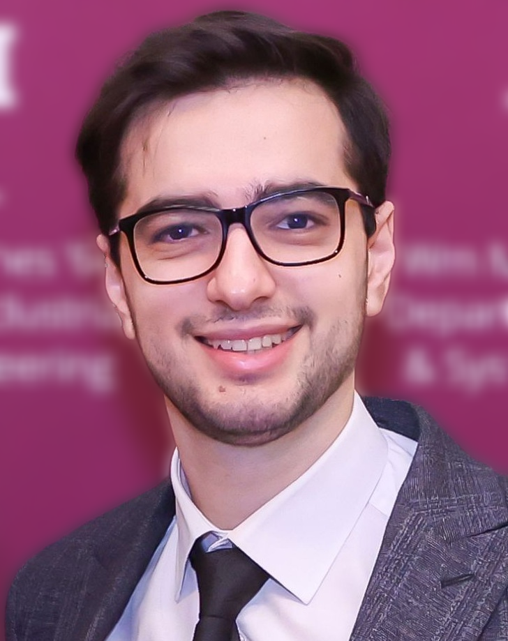

I work on stochastic simulation, digital twins, and AI-integrated decision systems, with a focus on uncertainty quantification, simulation optimization, reinforcement learning, and agentic AI.

I am a Ph.D. student in Industrial Engineering (Data Science Track) at Texas A&M University, advised by Dr. David J. Eckman.
My research covers stochastic simulation, digital twins, statistical model validation, uncertainty quantification, and simulation-based decision-making. It is supported by the National Science Foundation and Intuit AI.
I collaborate with the Intuit AI Research team on large-scale simulation optimization, probabilistic forecasting, surrogate-assisted reinforcement learning, and agent-generated simulation models.
In summer 2026 I was a Data Scientist Intern at C3 AI, working on C3 Code. In fall 2026 I am teaching ISEN 413, Advanced Data Analytics for Industry, at Texas A&M.